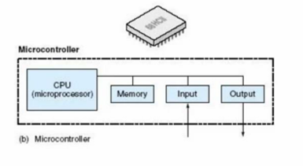
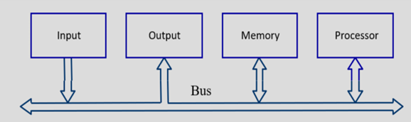
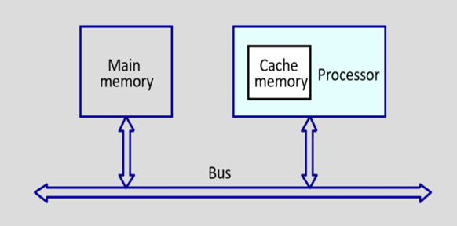
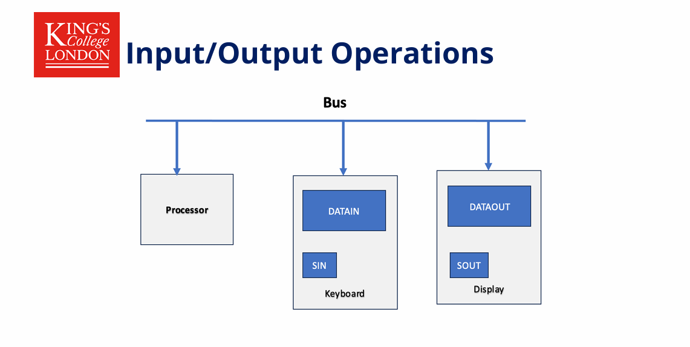
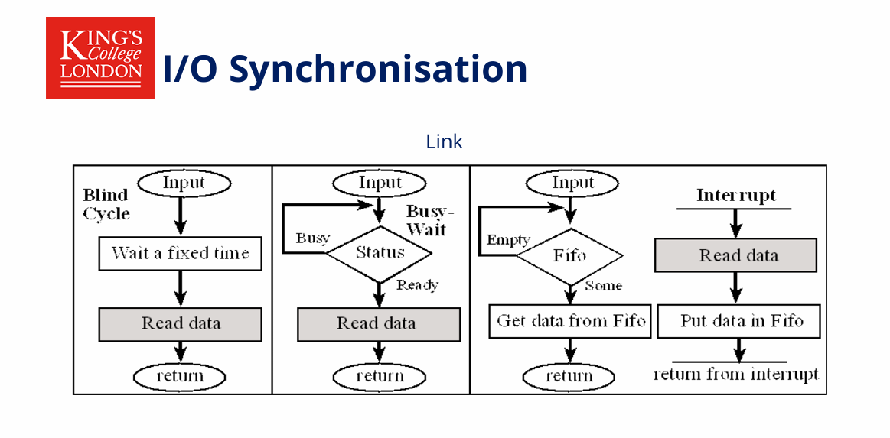
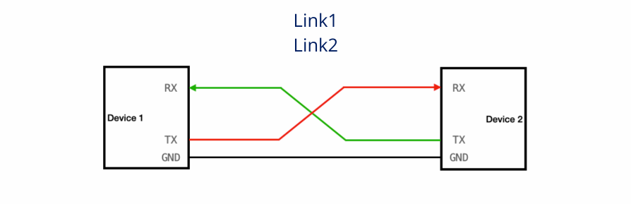
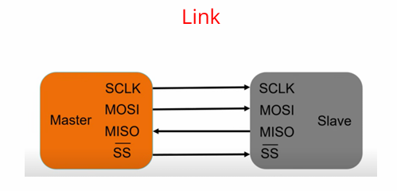
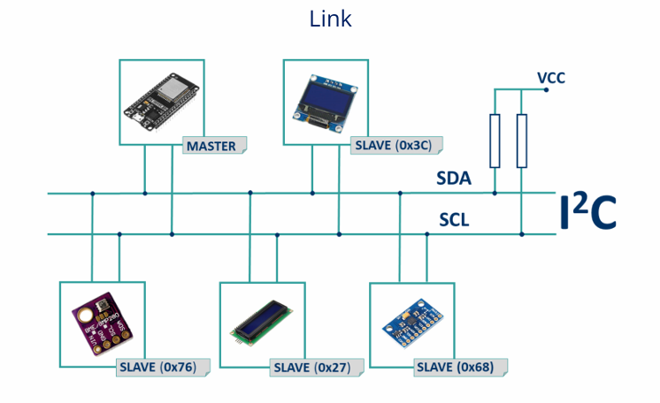
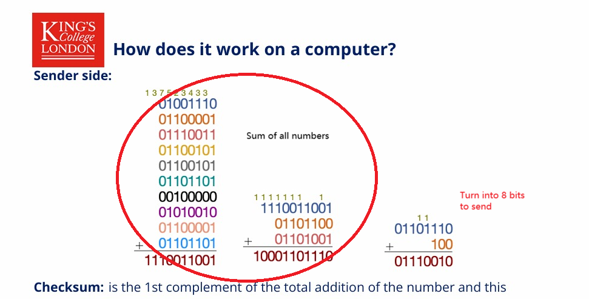
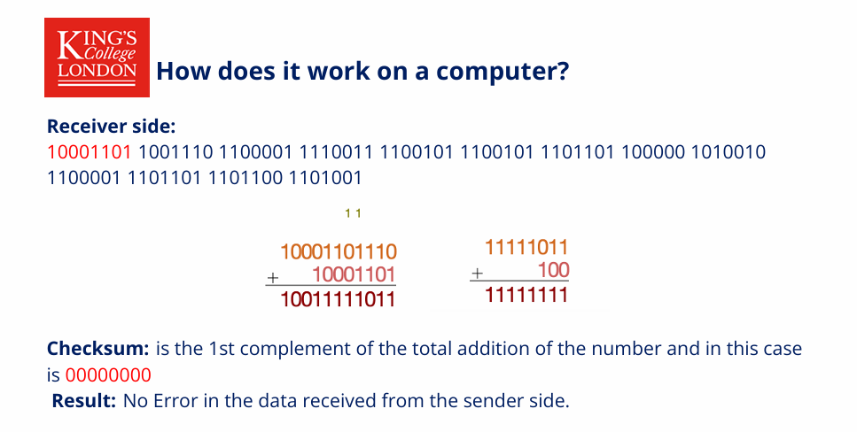

笔记
7CCEMEMB Embedded System Design#
I. Introduction#
Embedded systems are a combination of computer hardware and software designed for a specific function.
Types of different embedded systems:#
- Microcontroller
- Microprocessor
- System on a chip (SoCs)
- Field Programmable Gate Arrays (FPGA)
Challenges in embedded system design:#
- Sophisticated(精密的) functionality
- Real-time operation
- Low manufacturing cost
- Low power consumption
- Often have to run sophisticated algorithms on multiple platforms
- Often provide sophisticated user interfaces
Real-time embedded systems:#
correctness of the system behaviour not only depends
- on the logical results of the computations
- on the time at which the result are produced
Hard Real-Time systems#
- Must always meet deadlines (critical task)
- System fails if deadline window is missed. Example: airplane sensor, autopilot systems and spacecrafts.
Soft Real-Time system:#
- Must try to meet deadlines (desirable task)
- The system does not fail if few deadlines are missed.
- Example, audio and video streams
Power Management#
Modern microprocessors can control power consumption by
disabling unused circuitsanddynamically trimming clock speeds
Software techniques:
- Dynamic voltage and frequency scaling (DVFS) to match system power consumption with required performance.
Embedded Systems Design Methodologies#
- Top-down design: (start from most abstract description; work to most detailed)
- Bottom-up design: (work from small components to big system)
Requirements Form / Sheet#
| Items | Description |
|---|---|
| Name | |
| Purpose | |
| Inputs | |
| Outputs | |
| Functions | |
| Performance | |
| Manufacture Costs | |
| Physical Size/weight | |
| Power |
Examples:
| Items | Description |
|---|---|
| Name | GPS moving map |
| Purpose | Consumer-grade moving map for driving use |
| Inputs | Power button, two control buttons |
| Outputs | Back-lit LCD 400×600 |
| Functions | Uses 5-receiver GPS system; three user-selectable resolutions; always displays current latitude and longitude |
| Performance | Updates screen within 0.25 seconds upon movement |
| Manufacture Costs | £40 |
| Physical Size/weight | No more than 2×6 inches, 340g |
| Power | 100mW |
Requirement#
Informal description of what customer needs using plain language. It could be developed via interviewing customers, talking to marketing representatives, or getting feedback from customers. Requirements phase links customers with designers
Specification#
Precise description of what design team should deliver.
The requirements may be functional and non-functional.
- Non-functional
- time required to compute output
- power consumption
- manufacturing cost
- physical size, weight
- time-to-market
- reliability
- Functional
- input/output relationships
Many specification styles:
- Control-oriented vs. Data-oriented;
- Textual vs. Graphical.
Harvard vs Von Neumann Architecture#
- Harvard architecture has a separate program memory and data memory, which are accessed from separate buses.
- This improves bandwidth over traditional von Neumann architecture, in which program and data are fetched from the same memory using the same bus.
II. Embedded System Architecture#
Computer#
A calculating machine that can
- Accepts input information.
- Processes the information according to a list of internally stored instructions
- Produces the resulting output information.
Microprocessor#
It consists of only a central processing unit and uses an external bus to interface to RAM, ROM, and other peripherals. (e.g. CPU of a computer ...)
- higher processing speed
Microcontroller#

- more cost-effective
- more efficient power saving (e.g. the control board of a washing machine / microwave oven ...)
Functional Units of a computer#
- Input
- Keyboard ...
- Output
- monitor ...
- printer ...
- ALU
- perform the desired operations on input info by instructions in the mem.
- Control (coordinates various action)
- input
- output
- processing
- Memory (stores information)
- instructions
- data
How are the functional units are connected?#
They may be connected by a group of parallel wires which is called a bus. 
Organisation of Cache and main memory#

Arithmetic Logic Units#
ALU has two units:
- Arithmetic Units perform all
arithmetic operationsin a computer, and simple things like add one to a number. - Logic Units perform the
logical operationsand simple numerical tests such as negative or positive.
Half Adder and Full Adder#
Computers use binary for addition. Addition has two outputs: Sum (Sum) and Carry (Carry).
Half Adder#
- can only handle the addition of two 1-bit binary numbers (A and B).
- Cannot handle the carry-in bit.
- Output: \(Sum = A \oplus B\) (different or), \(Carry = A \cdot B\) (and).
Full Adder#
- Can handle three inputs: two additions A, B, and the previous carry-in bit (\(C_{in}\)).
Differences#
A full adder can be "cascaded" to form a multi-bit adder (e.g., 8-bit or 64-bit addition), whereas a half adder is usually used for lowest-bit calculations only.
How Control Unit works?#
Fetch: Reads the address of the next instruction to be executed from memory.Decode: Converts an instruction into an electronic control signal that determines what operation is to be performed (addition, jump, move data, etc.).Fetch Operands: If the instruction requires data, the control unit directs the data to be fetched from memory or a register.Execute: Sends a signal to the relevant component (e.g. ALU) to perform the task.Store/Write-back: Stores the result back into a register or memory.
III. Memory Architecture#
Memory Fundamentals & Hardware (Lecture 3)#
1. Memory Hierarchy (存储层次结构)#
Memory is organized in a pyramid based on speed, capacity, and cost.
- CPU Registers (寄存器): The top of the pyramid. Fastest access, smallest capacity, located inside the CPU.
- Cache (缓存): L1, L2, L3 SRAM. Very fast, bridges the speed gap between CPU and Main Memory.
- Main Memory (主存): DRAM. Larger capacity, slower than cache.
- Secondary Memory (二级存储): Flash or Magnetic (HDD). Slowest, largest capacity, non-volatile.
Note: In embedded systems, code execution usually happens directly from Flash Memory.
2. Building Blocks (构建模块)#
- Logic Gates (逻辑门): The basic unit (AND, OR, NOT) used to create memory circuits.
- Latch (锁存器): Created by combining gates. It can store 1 bit of data. A "Gated Latch" has a "Write Enable" line.
- Register (寄存器): A group of latches sharing a common "Write Enable" line. An 8-bit register holds 8 bits of data.
- RAM Construction: A matrix of latches addressed by Row and Column selectors (Multiplexer).
3. Memory Characteristics (存储特性)#
- Capacity (容量): The amount of storage. Embedded systems typically range from Kilobytes to Megabytes.
- Volatility (易失性):
- Volatile (易失性): Loses data when power is off (e.g., SRAM, DRAM, Registers).
- Non-Volatile (非易失性): Retains data without power (e.g., ROM, Flash, EEPROM).
- Access Method (访问方式): Random Access (随机访问) allows accessing any location instantly given an address.
- Latency (延迟): The time taken to transfer a single word of data to/from memory.
Memory Architecture & Segments (Lecture 4)#
1. The Platform & Memory Map (平台与内存映射)#
- Platform: Includes the CPU, the Integrated Circuit (IC), and Peripherals.
- Memory Map (内存映射): The CPU views memory as a linear array of addresses. Different address ranges are assigned to Flash (Code), SRAM (Data), and Peripherals.
2. CPU Registers (ARM Cortex-M0+)#
Registers are the most tightly integrated memory.
- General Purpose (通用寄存器):
R0-R12, used for operations and operands. - Special Purpose (专用寄存器):
- SP (
R13- Stack Pointer): Points to the top of the stack (MSP or PSP). - LR (
R14- Link Register): Stores return addresses for function calls. - PC (
R15- Program Counter): Tracks the address of the current instruction.
- SP (
3. Memory Segments (内存段)#
A program is divided into specific segments in memory:
- Code Segment (代码段):
- Located in Flash (Non-volatile).
- Read-Only.
- Stores instructions and constants.
- Data Segment (数据段):
- Located in SRAM (Volatile).
- Stores variables and the stack.
- Sub-segments of Data Memory:
- Stack (栈): Temporary storage for local variables and function parameters. It grows down.
- Heap (堆): Dynamic storage (e.g.,
malloc). It grows up. - Data: Initialized global and static variables (Non-zero).
- BSS: Zero-initialized or uninitialized global/static variables.
4. Variable Scope & Lifetime (变量作用域与生命周期)#
- Global Variables (全局变量): Allocated at compile time. Exist for the lifetime of the program. Stored in Data or BSS segments.
- Local Variables (局部变量): Allocated at run-time. Exist only during the function/block execution. Stored in the Stack.
Summary Q&A#
1. How the memory works? Memory works by using digital circuits to store binary states (0s and 1s). It starts with basic logic gates (AND/OR/NOT) which form latches. Multiple latches form registers (to store bytes), and massive arrays of these latches form RAM, allowing data to be written or read based on specific addresses selected by a multiplexer .
2. What are different types of memory? Memory is primarily categorized by volatility:
- Volatile Memory: Requires power to maintain data (e.g., SRAM for cache/internal data, DRAM for main memory).
- Non-Volatile Memory: Retains data without power (e.g., Flash for code storage, EEPROM, ROM).
3. What is the Memory hierarchy in embedded systems? It is a structure balancing speed and cost:
- Top: CPU Registers (Fastest, Smallest).
- Middle: SRAM (Fast, used for Data/Stack/Heap).
- Bottom: Flash (Slower, High Capacity, used for Code storage) .
4. How we communicate (read/write) with memory? The CPU communicates via a bus controller using three main signals:
- Address Bus: Specifies where to read/write.
- Data Bus: Carries the actual information.
- Control Bus (Read/Write/Enable): Signals whether to retrieve data or store it.
5. What is Data Memory vs. Code Memory?
- Code Memory (Flash): Stores the program instructions and constants. It is non-volatile and usually Read-Only during runtime.
- Data Memory (SRAM): Stores variable data (variables, stack, heap). It is volatile and allows Read/Write operations during execution.
6. Stack vs. Heap?
- Stack: Used for static memory allocation (local variables, function calls). It is ordered (LIFO - Last In First Out) and managed automatically by the compiler. It grows downwards in memory.
- Heap: Used for dynamic memory allocation (user-managed via
malloc/free). It is unordered and grows upwards in memory.
IIII. I/O Architecture and Program Execution#
1. I/O Architecture (输入/输出架构)#
Digital to Analogue Converters (DAC, 数模转换器)#
DACs convert a digital binary signal (0s and 1s) into a continuous analog output signal.
- Mechanism: Uses components like String Resistor Ladders (电阻梯) with switches to select a voltage level corresponding to the digital input.
- Key Formula: \(V_{out} = V_{ref} \times (\frac{D}{2^n})\) where \(D\) is the digital value and \(n\) is the number of bits.
- Common Errors (常见误差):
- Offset Error (失调误差): Constant difference from the ideal output.
- Gain Error (增益误差): Difference proportional to the signal magnitude.
- Integral Non-Linearity (INL, 积分非线性): Deviation of the characteristic curve from a straight line.
Analogue to Digital Converters (ADC, 模数转换器)#
ADCs convert real-world analog signals (voltage) into digital data for the processor.
- Process Flow:
- Transducer (传感器): Converts physical quantity to voltage.
- Signal Conditioning (信号调理): Amplifies and filters noise.
- Sample and Hold (采样保持): Uses a capacitor to hold the voltage steady during conversion.
- Types of ADC:
- Flash ADC (闪存型 ADC):
- Uses a bank of Comparators (比较器) and a Priority Encoder (优先编码器) in parallel.
- Pros: Extremely fast (up to 30 Msps).
- Cons: Expensive and complex (number of comparators doubles with each added bit).
- Successive Approximation Register ADC (SAR ADC, 逐次逼近型 ADC):
- Uses a comparator and a DAC to test bits one by one (binary search).
- Pros: Reasonable cost, accurate, low power. Used in Raspberry Pi Pico (12-bit).
- Flash ADC (闪存型 ADC):
- Sampling Theory (采样理论):
- Quantization (量化): Approximating continuous values to discrete steps. Max error is \(\frac{1}{2} V_{LSB}\).
- Nyquist Theorem (奈奎斯特定理): Sampling frequency must be at least twice the highest signal frequency (\(f_s \ge 2f_{max}\)) to avoid Aliasing (混叠).
Pulse Width Modulation (PWM, 脉冲宽度调制)#
A digital technique to simulate analog voltage by controlling the "ON" time of a pulse.
- Duty Cycle (占空比): The ratio of "ON" time to the total period.
- Longer ON time = Higher average voltage/speed.
- Applications: Controlling motor speed, LED brightness.
- RP2040: Has 8 PWM slices (16 outputs) and all GPIOs can be configured as PWM.
2. Program Execution (程序执行)#
The Instruction Cycle (指令周期)#
The processor executes a program by repeating a cycle:
- Load/Fetch (取指): Read the instruction from memory.
- Decode (译码): Figure out the operation and required data.
- Execute (执行): Perform the computation (ALU operations like Add, Sub).
- Next Instruction: Update the Program Counter (PC) to the next address or jump target.
Summary Q&A#
- What is the I/O interface in embedded system?
The I/O interface consists of mechanisms and buses (like AHB/APB bridges) that allow the CPU to communicate with external peripherals (sensors, motors) and memory, enabling the system to interact with the physical world.
- How Digital to Analogue Converters (DAC) works?
A DAC takes a binary number (digital code) and closes specific switches in a resistor network (like a string resistor ladder). This selects a specific voltage level from a reference voltage to output an analog signal proportional to the digital input.
- What is the Analogue to Digital Converters (ADC)?
An ADC is a device that samples a continuous analog voltage at fixed intervals and quantizes it into a discrete digital binary value. It is essential for processing sensor data (temperature, sound, etc.).
- How we use the Pulse Width Modulation (PWM)?
PWM is used to control the power delivered to a load (like a motor or LED) without dissipating heat via resistance. By switching a digital output ON and OFF rapidly and varying the Duty Cycle, we can change the average voltage and current seen by the load, effectively controlling speed or brightness efficiently.
- Program execution?
Program execution is the continuous process where the CPU fetches instructions from memory (Code/Flash), decodes them to understand the command, fetches necessary data from registers or memory, executes the operation (arithmetic or logic), and then moves to the next instruction.
V. Embedded Networking and Communications#
1. Finite State Machine (FSM / 有限状态机)#
- Definition: A model of behavior consisting of states, transitions, and actions to represent systems that change state in response to inputs.
- Elements: Finite set of states (including an initial state), inputs, outputs, state transition logic, and output logic .
- Moore Machine (摩尔型有限状态机): A specific type of FSM where current output values are determined only by the current state.
2. I/O Operations (输入/输出操作)#
- Mechanism: Uses buffer registers (DATAIN/DATAOUT) and status control flags (SIN/SOUT).
- Input: SIN flag sets to 1 when data is in the buffer; cleared when the processor reads it .
- Output: SOUT flag indicates the display is ready to receive a character. 
3. I/O Synchronization (I/O 同步)#
Synchronization bridges the speed mismatch between communicating devices. There are five main mechanisms:
- Blind Cycle (盲周期): Software waits a fixed time assuming I/O completes. Used for predictable, short tasks (e.g., LCD, stepper motors) .
- Busy Wait (忙等待): Software loop continuously checks the I/O status flag until done.
- Interrupt (中断): Hardware triggers a special software execution (ISR) when data is ready or the device is idle.
- Periodic Polling (周期性轮询): Uses a clock interrupt to check I/O status at regular intervals.
- Direct Memory Access (DMA / 直接存储器访问): Transfers data directly between I/O and memory without CPU intervention.

4. I/O Access Modes (I/O 访问模式)#
- Programmed I/O (程序控制 I/O): CPU controls the whole transfer and stays in a loop waiting for the device. Wasteful of CPU time .
- Interrupt-Driven I/O (中断驱动 I/O): Peripheral initiates transfer via signal; CPU only stops current execution when needed. More efficient .
- DMA: Specialized unit handles block transfers. CPU sets start address/size, and DMA interrupts CPU only upon completion .
5. Buses (总线)#
- Definition: Communication path interconnecting CPU, memory, and I/O.
- Types: Control bus, Address bus, Data bus .
- Timing Protocols:
- Synchronous (同步):
- The timing information for all devices are driven from a common clock signal.
- One data transfer can take place during one bus cycle.
- Asynchronous (异步): Uses handshaking signals (Master-ready and Slave-ready) instead of a common clock .
- Synchronous (同步):
6. Parallel Port (并行端口)#
- Function: Transfers multiple bits (e.g., 8 or 16) simultaneously.
- Pros/Cons: Faster per cycle but suffers from cross-talk (electrical interference), bulky cables, and signal degradation over distance.
- Usage: Used for Keyboards (Input) and Printers (Output) using status lines like
ValidorIdle.
7. Serial Port (串行端口)#
- Function: Transmits data one bit at a time. The speed is defined by the Bit Rate (比特率).
- UART (Universal asynchronous receiver transmitter 通用异步收发传输器):
- Frame Structure: Idle -> Start Bit (0) -> Data Bits (usually 8) -> Parity Bit (Optional) -> Stop Bit (1).
- FIFO (First In First Out / 先入先出): Buffers data to separate production and consumption rates, improving efficiency.
- Parity: Used for error checking (Even/Odd). Detects single-bit errors but cannot locate them.

Example: A UART port is configured with the parameters:
- baud rate: 9600
- data bits: 8
- stop bit: 1
- start bit: 1
- parity bit: none How long does it take to transmit 5k bytes data?
8. Serial Standards#
- RS-232: Single-ended signaling. Low speed (max 20 Kbps at 50ft), short distance, point-to-point (DTE to DCE).
- RS-485: Differential signaling (noise cancellation). High speed (\(10~Mbit/s\)), long distance (4000 ft), used in industrial applications.
9. Board-Level Protocols#
- SPI (Serial Peripheral Interface / 串行外设接口):
- Wires: 4 - Serial Clock (SCK), Slave Select (SS), Master Out Slave In (MOSI), Master In Slave Out (MISO).
- Features: Master/Slave, high speed, simple shift register logic.
- Cons: No addressing, no flow control, no acknowledgements, no error checking.

- I2C (Inter-Integrated Circuit / 集成电路总线):
- Wires: 2 - SCL (clock line) and SDA (data line).
- Features: Address-based (supports multiple devices), uses Start/Stop conditions and ACKs.
- Use case: Lower speed, multiple simple sensors.
- SCL functions as a clock line and SDA can function as a 1-bit serial data line or as a 1-bit serial address line. A common ground is also required. 
- How I2C works ?
- Master issues a START condition (First pulls SDA low, then pulls SCL low). Master writes an address to the bus. Add a bit indicating whether it wants to read or write. Slaves that do not match address do not respond. A matching slave issues an ACK by pulling down SDA.
- Either master or slave transmits one byte Receiver issues an ACK. This step may repeat.
- Master issues a STOP condition First releases SCL, then releases SDA At this point the bus is free for the other transaction
10. High-Level Protocols#
- Medium-end: Modbus, Profibus, CAN.
- High-end: Ethernet, Profinet.
Summary Q&A#
1. What is the finite state machine? A Finite State Machine (FSM) is a software model used to represent systems that transition between a finite number of states based on input events. It helps separate the system's "policies" (what to do) from "mechanisms" (how to do it).
2. What are input/output operations in embedded systems? These are operations where the processor transfers data to and from external devices (like keyboards or displays) using buffer registers (DATAIN/DATAOUT) and synchronizes the transfer using status flags (SIN/SOUT) to indicate when data is valid or the device is ready.
3. What are the synchronization algorithms for software and hardware? The main algorithms are:
- Blind Cycle: Waiting a fixed time.
- Busy Wait: Loops checking a status flag.
- Interrupt: Hardware signals the CPU to stop and service the device.
- Periodic Polling: Checking status at fixed clock intervals.
- DMA: Hardware handles transfer directly to memory .
4. What are ways to access I/O devices and how each one is working?
- Programmed I/O: The software controls the entire transfer, keeping the CPU busy in a loop.
- Interrupt-Driven: The peripheral signals the CPU when it is ready, allowing the CPU to do other work until interrupted.
- DMA: A dedicated controller transfers blocks of data between I/O and memory without the CPU's active involvement.
5. What are the buses and how they will work? Buses are communication paths (Data, Address, Control) connecting the CPU, memory, and I/O. They work via Synchronous timing (using a shared clock) or Asynchronous timing (using "Master-ready" and "Slave-ready" handshaking signals).
6. What is parallel and serial port and what is the difference between them? A Parallel port transfers multiple bits (e.g., 8) simultaneously, making it faster per cycle but bulky and prone to interference. A Serial port transfers data one bit at a time sequentially. Serial ports are generally smaller, cheaper, and better for longer distances.
7. What is embedded network? An embedded network refers to the communication protocols and physical interfaces used to connect microcontrollers to sensors, actuators, and other controllers. It ranges from low-level chip protocols (UART, SPI, I2C) to industrial standards (RS-485, CAN, Modbus).
8. What is the difference between I2C and SPI and where to use them?
- SPI uses 4 wires, is faster, and has no addressing overhead; it is best for high-bandwidth streams (like A/D converters).
- I2C uses 2 wires and device addresses; it is slower but uses fewer pins and is better for connecting many simple sensors on a board.
9. What are mid and high-end communication protocols?
- Mid-end: Modbus, Profibus, and CAN (often used in industrial automation).
- High-end: Ethernet and Profinet (used for high-speed, complex networking) .
VI. Real Time Operating Systems and Scheduling#
1. Data Checking Methods (数据校验方法)#
Reliability is crucial in embedded systems. Several methods are used to ensure data integrity during transmission.
- Parity Check (奇偶校验):
- Mechanism: An extra bit (parity bit) is added to the data unit.
- Even Parity (偶校验): The total number of 1s (including the parity bit) must be even.
- Odd Parity (奇校验): The total number of 1s must be odd.
- Limitation: It is a simple method but weak. It can detect single-bit errors but fails if an even number of bits are flipped (e.g., two errors might cancel each other out).
- Mechanism: An extra bit (parity bit) is added to the data unit.
- Checksum (校验和):
- Mechanism: The sender adds up the data segments and takes the 1's complement of the sum to generate the checksum. The receiver performs the same addition including the checksum; the result should be all 0s (in 1's complement arithmetic).
- Advantage: Better than parity checks as it can detect more complex error patterns.


- Cyclic Redundancy Check - CRC (循环冗余校验):
- Mechanism: Uses polynomial division (binary division with XOR operations). The sender divides the data by a "divisor" (polynomial) and appends the remainder to the data. The receiver divides the received message by the same divisor; if the remainder is 0, the data is correct.
- Advantage: Highly effective at detecting burst errors and validates the order of bits (bit sequence), which simple parity cannot do.
2. Real-Time Operating Systems - RTOS (实时操作系统)#
- Definition: A system where correctness depends not only on the logical result (逻辑结果) but also on the time (时间) at which the result is produced.
- Classifications:
- Soft Real-Time (软实时): Missing a deadline results in lower quality of service but is not catastrophic 灾难性的 (e.g., email delivery).
- Hard Real-Time (硬实时): Missing a deadline causes total system failure or catastrophic consequences (e.g., airbag deployment, chemical plant pressure valve).
- Firm Real-Time (固实时): Lies between soft and hard. A few missed deadlines are tolerable (quality loss), but too many lead to failure (e.g., video streaming dropping frames).
3. Threads (线程)#
- Concept: A thread is a "program in action" (dynamic). While a Program (程序) is static code in ROM, a Thread breathes life into it using the processor.
- Structure: Each thread has its own Stack (栈) to store:
- Registers (e.g., PC, SP, PSR).
- Local variables.
- Shared Resources: Threads share global memory and I/O but have private stacks.
4. Task States (任务状态)#
A thread transitions between different states controlled by the OS:
- Active/Ready (就绪): Ready to run but waiting for the CPU.
- Run (运行): Currently executing.
- Blocked (阻塞): Waiting for an external event (e.g., I/O, keyboard).
- Sleep (休眠): Waiting for a fixed amount of time.
5. Real-Time Metrics#
- Latency (延迟): Time difference between when an event occurs and when the task starts running (\(\Delta_i = T_i - E_i\)).
- Jitter (抖动): The variation in timing; difference between the desired run time and the actual run time.
6. Scheduling Algorithms (调度算法)#
The Scheduler (调度器) creates the illusion of concurrent processing (并行处理).
- Rate Monotonic Scheduling - RMS (速率单调调度):
- Type: Static Priority (静态优先级).
- Rule: Priority is determined by the Period (周期). Shorter period = Higher priority.
Schedulability Test: Sufficient but not necessary.
\[\sum_{i=1}^n \frac{C_i}{P_i} \le n(2^{\frac{1}{n}}-1)\](Utilization must be below a bound, approx 0.69 for large \(n\)).
- Earliest Deadline First - EDF (最早截止时间优先):
- Type: Dynamic Priority (动态优先级).
- Rule: Priority is based on the absolute Deadline (截止时间). The task with the closest deadline runs first.
Schedulability Test: Necessary and sufficient.
\[\sum_{i=1}^n \frac{C_i}{P_i} \le 1\](Total utilization must be less than or equal to 100%).
7. Priority Inversion (优先级反转)#
- Problem: A high-priority task is blocked by a low-priority task that holds a shared resource (critical section). If a medium-priority task preempts the low-priority task, the high-priority task is delayed indefinitely.
- Solution: Priority Inheritance Protocol (优先级继承协议). When a low-priority task blocks a high-priority task, it temporarily inherits the high priority until it releases the resource.
8. Multi-Core Systems (多核系统)#
- Purpose: To handle increasing computational demands and allow parallel processing.
- Structure: Multiple cores share caches and interconnects to process data (e.g., CATS/DOGS example in slides).
9. Network Flow Scheduling (网络流调度)#
- Concept: Scheduling is modeled as a graph problem (\(G(V,E)\)) with a Source (\(s\)) and a Sink (\(t\)).
- Mapping:
- Nodes: Jobs (\(J\)) and Time Frames (\(F\)).
- Edges: Represent capacity (execution time).
- Goal: Maximize flow from Source to Sink. If Max Flow equals the total execution time of all tasks, the set is schedulable.
- Algorithm: Ford-Fulkerson Algorithm.
- Finds Augmenting Paths (增广路径) in the Residual Graph (残余图).
- Max Flow Min Cut Theorem: The maximum flow is equal to the capacity of the minimum cut (bottleneck).
10. Energy Efficient Scheduling (节能调度)#
- Motivation: Processors use CMOS technology where dynamic power is the bottleneck.
- Power \(\propto V^2 \times F\) (Voltage squared times Frequency).
- DVS / DVFS (动态电压频率调整): Dynamic Voltage (and Frequency) Scaling.
- Technique to reduce power by lowering voltage/frequency when peak performance is not needed.
- Trade-off: Lower frequency means tasks take longer to execute (\(t_{execution}\) increases), but power drops quadratically, resulting in net energy savings.
- Static Voltage Scaling: Scaling factors are calculated offline to ensure utilization \(\le 1\) at the reduced frequency.
Summary Q&A#
1. How Check Sum and CRC works for data check?
- Checksum: It works by summing up the data values being transmitted. The result (often the 1's complement of the sum) is sent along with the data. The receiver performs the same calculation; if the calculated sum matches the received checksum (result is zero), the data is assumed correct.
- CRC (Cyclic Redundancy Check): It uses polynomial division. The data bits are treated as a large number and divided by a predetermined binary number (the polynomial). The remainder of this division is the CRC code appended to the message. The receiver divides the incoming message by the same number; a zero remainder indicates no errors. CRC is particularly good at detecting burst errors and bit-order errors.
2. What is parity check and why it is not a good approach?
- Parity Check is adding a single bit to a data block to make the total number of 1s either even (even parity) or odd (odd parity).
- Why it is not good: It is not robust because it can only detect an odd number of bit errors (e.g., 1, 3, 5 errors). If two bits flip (e.g., a 0 becomes 1 and a 1 becomes 0), the parity count remains the same, and the error goes undetected.
3. What is a real-time operation system?
- An RTOS is an operating system where the correctness of the system depends not only on the logical results of the computations but also on the time at which those results are produced. It is designed to process data as it comes in, typically without buffering delays, to meet strict deadline constraints (Hard, Firm, or Soft).
4. What are the Threads and how they are used in RTOS?
- Threads are "light-weight processes" or programs in execution. Unlike static programs, threads have dynamic states (registers, stack, local variables). In an RTOS, multiple threads are used to perform different functions (tasks) concurrently. The RTOS switches the processor between these threads to achieve the desired system functionality.
5. What is Scheduler?
- A scheduler is a kernel function in the Operating System responsible for deciding which thread should run at any given time. It switches between threads (context switching) to give the illusion of simultaneous execution (concurrency) on a single processor.
6. Explain RMS and EDF scheduling.
- RMS (Rate Monotonic Scheduling): A static priority algorithm for periodic tasks. It assigns priorities based on the task's period: the shorter the period, the higher the priority. It is optimal for static priorities.
- EDF (Earliest Deadline First): A dynamic priority algorithm. It assigns priorities based on the absolute deadline of the current job: the task with the closest deadline gets the highest priority. It can achieve 100% CPU utilization.
7. What is priority inversion problem?
- Priority Inversion occurs when a high-priority task is forced to wait for a lower-priority task to complete. This usually happens when the low-priority task holds a lock on a shared resource that the high-priority task needs. If a medium-priority task preempts the low-priority task while it holds the lock, the high-priority task is blocked for an indefinite period, potentially causing deadline misses.
8. What are multi-core processors and how they work?
- Multi-core processors are single chips containing two or more independent processing units (cores). They work by allowing multiple instructions or threads to run in parallel on separate cores, sharing resources like memory and interconnects, which increases overall performance and efficiency compared to single-core systems.
9. How Network flow formulation work?
- Network flow formulation models the scheduling problem as a directed graph with a source and a sink. Jobs and Time Frames are represented as nodes. Edges represent the capacity (execution time) available. The problem is solved by finding the "Maximum Flow" from source to sink. If the max flow equals the total execution time required by all jobs, a valid schedule exists. Algorithms like Ford-Fulkerson are used to calculate this flow.
10. What is Energy Efficient Scheduling?
- Energy Efficient Scheduling involves managing the processor's execution speed to minimize energy consumption while still meeting task deadlines. The primary technique discussed is Dynamic Voltage Scaling (DVS) (or DVFS), where the processor's voltage and frequency are lowered when the workload is light. Since power consumption is proportional to the square of the voltage (\(V^2\)), reducing the speed slightly results in significant energy savings.